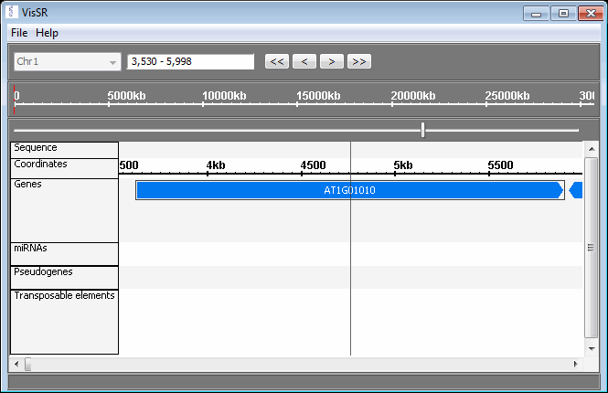

Visualisation of Small RNAs (VisSR)
Sequence visualisation within the UEA sRNA Workbench is performed in the VisSR tool (pronounced visor).
The tool may be run on its own or from other tools, e.g. miRCat.
To open the tool choose 'VisSR' from the 'Tools' menu in the main Workbench window.
Data is loaded into VisSR from the File menu.
VisSR showing a gene annotation for Arabidopsis thaliana

From top to bottom, the VisSR screen is divided into four sections:
Navigation controls
The sequence identifiers, e.g. chromosome ids, are shown in the drop-down list. Changing the value will load the sequence and recalibrate the display.Next to the list is an editable text-field within which base coordinates can be typed. When the two numbers are separated by a '-' the display is moved to the specified coordinates. If the numbers are separated by a '+' then the second number specifies the width. Additionally, a 'kb' or an 'mb' may be included at the end of each number as short-hand for a thousand bases and a million bases respectively. For example, typing '1.5mb-2.5mb' would move the display so that base number 1,500,000 lies on the left-hand side, and base number 2,500,000 on the right. The same result would be achieved by typing '1500kb+1mb'.
Alternatively a text-based identifier can be typed and a search will be performed. This is useful for finding a specified gene when displaying annotations. For example, typing 'AT1G01010' when displaying chromosome 1 of Arabidopsis thaliana produces the view shown above.
The '<<', '<', '>', '>>' buttons move the displayed range according to the currently displayed width. The '<<' button moves the display to the left by one whole screenful, while the '<' button moves the display by half a screenful. The other buttons move the displayed range to the right.